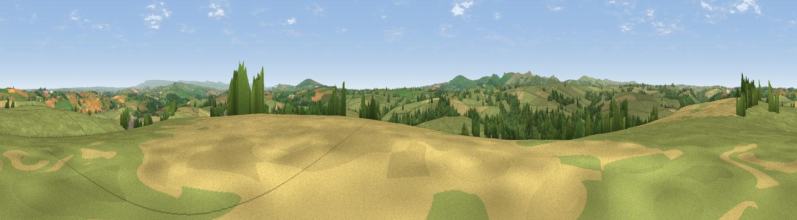

Larrick Hill
#12615 in England · top 21% of its area beats it · near TrebullettWhere it is
The exact computed spot (SX 31387 78519). Click the marker for map links.
The view, rendered

A 360° render of this exact spot computed from the terrain model, tree cover and land cover — summer colours, afternoon light, calibrated against photographs of famous viewpoints. Real trees, hedges and buildings will differ in detail.
The panorama
Grey silhouette: terrain skyline in each direction (720 bearings, Earth curvature and refraction included). Dashed green: skyline with trees (+15 m) and buildings (+8 m) as obstacles. Blue strip: how far the ground is visible on each bearing.
Where the view opens
Wedge length = distance to the farthest visible ground on that bearing (vegetation-aware). Rings at 10, 25 and 50 km.
What fills the view
70% grassland · 15% woodland · 15% cropland ·
Angular shares of the visible panorama (visual magnitude), not map area. Landscape diversity 0.37 (0–1 Shannon).
Key numbers
More beautiful places nearby
The staircase of upgrades: each row has a higher view potential than everything closer. Driving times are estimates from straight-line distance, calibrated against real road routing — check an actual route before setting out.
| Place | Direction | Drive | Score |
|---|---|---|---|
| Viewpoint near North Hill | WSW · 6 km | ~12 min | 64.7 |
| Hawk's Tor | WSW · 6 km | ~13 min | 67.0 |
| Viewpoint near North Hill | W · 7 km | ~14 min | 68.6 |
| Viewpoint near Henwood | WSW · 7 km | ~15 min | 76.2 |
| Viewpoint near Henwood | SW · 8 km | ~16 min | 77.3 |
| Caradon Hill | SSW · 9 km | ~17 min | 78.5 |
| Kit Hill | SE · 9 km | ~18 min | 80.3 |
| Viewpoint near Lesnewth | WNW · 23 km | ~38 min | 82.6 |
50.58200, -4.38302 · source: dobih hill · position refined by local search. Computed location — check access rights before visiting.